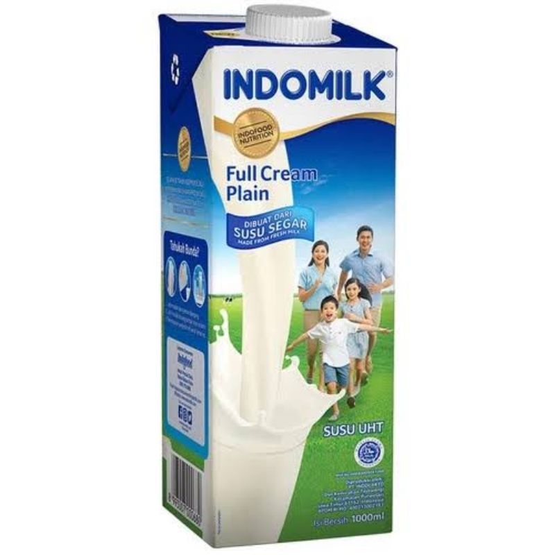

Profil Produk: Susu Indomilk

Susu Indomilk adalah produk susu berkualitas tinggi yang diproduksi oleh PT Indolakto, anak perusahaan Indofood. Indomilk hadir dalam berbagai varian seperti susu cair UHT, susu bubuk, dan susu kental manis, yang diformulasikan untuk memenuhi kebutuhan nutrisi keluarga Indonesia. Dengan rasa yang lezat dan kandungan gizi seimbang, Indomilk menjadi pilihan tepat untuk pertumbuhan dan kesehatan seluruh anggota keluarga.